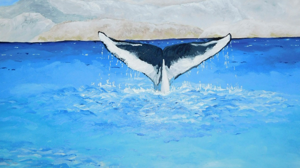

Insights, Stories, and Travel Tips
-

Antarctica's Marine Life: Whales, Seals, and Albatrosses
Discover the diverse marine life of Antarctica, including majestic whales, playful seals, and soaring albatrosses, and learn about their unique behaviors and habitats.
Learn More -
Behind the Lens: Photographing the Aurora Australis in Antarctica
Get tips and techniques for capturing the mesmerizing Aurora Australis. This guide is perfect for photographers seeking to immortalize the stunning southern lights.
Learn More -
Antarctic Cuisine
Dining in Antarctica is a unique and memorable experience. Despite the remote and harsh conditions, the culinary offerings can be surprisingly diverse and delicious. This article delves into the culinary aspects of Antarctic expeditions.
Learn More -

The Sounds of Silence
One of the most profound experiences in Antarctica is the overwhelming sense of silence and tranquility. This article explores the unique auditory landscape of the icy continent.
Learn More -
Climate Change in Antarctica
Antarctica is both a victim of and a vital indicator for global climate change. This article examines the impacts of climate change on the continent and the efforts being made to mitigate these effects.
climate.html -
Navigating Antarctic Waters
Antarctica’s vast coastline is dotted with wildlife-rich areas and secluded spots waiting to be explored. This article guides you through the most captivating locations.
Learn More